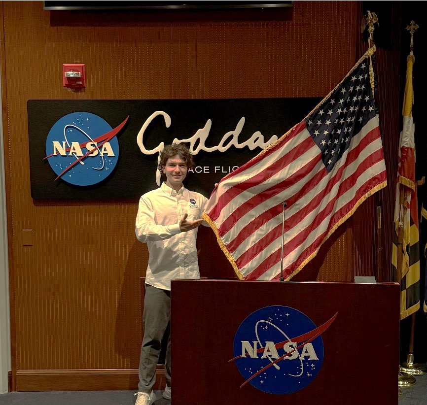

INGENIERÍA · INVESTIGACIÓN · EMPRENDIMIENTO
Jesús Navas
Guerrero
Ingeniero físico y aeroespacial. Conecto la investigación, la tecnología y la creación de productos.
De la física solar en NASA Goddard a la ingeniería en Imperial College London y el desarrollo de Attendi.

Barcelona / Londres